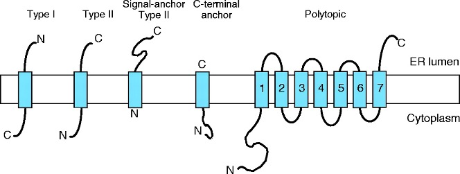

1D Features
By definition 1D features are protein features that can be decoded directly from the protein primary structure and represented as values (categories, %, …) associated to individual residues in the sequence. For instance, we can assign a secondary structure state (symbol or probability) to each residue. Many structure prediction methods implement or call third parties methods to predict secondary structure and other 1D features, as important additional information during modeling process.
You can find links to several 1D features prediction tools in the Modeling Resources section.
1 Protein secondary structure prediction
Multiple state of secondary structures
Secondary structures are assigned to structures using DSSP (Define Secondary Structure of Proteins) algorithm, originally written in 1983 and updated several times throughout the years, being the last version from 2021 (available on GitHub). This algorithm classifies each residue considering its geometry and H-bonds prediction by comparison with pre-existing patterns in DSSP database. Remarkably, DSSP does not predict secondary structures, it just extracts this information from the 3D coordinates.
Most protein secondary structure prediction (PSSP) methods use a three-state secondary structure, in which the secondary structure elements consist of helix (H), sheet (E), and coil (C). Helix and sheet are the two main conformations suggested in early times of structural biology by Linus Pauling (see Intro Lesson), whereas Coil (C) denotes an amino acid that does not fit both H and E. This representation is very important and still used by many structural biologist, however it imposes several limitations that cannot be overlooked. This is because three secondary structure states are only a coarse-grained representation of the backbone structure with helical and sheet residues that very often can deviate from the standard helix and sheet conformations.
Already in the 80s, a eight-state secondary structure was proposed (see Ismi, Pulungan, and Afiahayati (2022)), consisting in α-helix (H), 310-helix (G), parallel/anti-parallel β-sheet (E), isolated β-bridge (B), bend (S), turn (T), π-helix (I) and coli (C). In fact, DSSP, defines the eight states in experimentally obtained structures and it also contains transformations that rule the mapping of eight-state secondary structures to the three-states.
More recently, in 2020, four-state and five-state PSSP were proposed to simplify predictions and increase the true-positives. The reason for proposing four-state and five-state PSSP was the imbalanced samples of each class: isolated β-bridge (B) and bend (S) have a small number of samples and low true-positive rates. In five-state PSSP, B and S are considered as C, whereas in four-state PSSP, B, S, and G are considered as C. Moreover, 75% of π-helix (I) was located at the beginning or the end of an a-helix structure (H), so it was categorized as H. The full potential of this new categories is still to be analyzed in detail
Evolution of Prediction methods
Protein secondary structure prediction (PSSP) from protein sequences is based in the hypothesis that Segments of consecutive residues have preferences for certain secondary structure states. Similar to other methods in bioinformatics, including protein modeling, approaches to SS prediction evolved during the last 50 years (see Table 1).
First generation methods rely on statistics approaches and prediction depends on assigning a set of prediction values to a residue and then applying a simple algorithm to those numbers. I.e. apply a probability score based on single amino acid propensity. In the 1990’s, new algorithms included the information of the flanking residues (3-50 nearby amino acids) in the so-called Nearest Neighbor (N-N) Methods. These methods increased the accuracy in many cases but still had strong limitations, as they only considered three possible states (helix, strand or turn). Moreover, as you know from the secondary structure practice, β-strands predictions are more difficult and did not improve much thanks to N-N methods. Additionally, predicted helices and strands were usually too short.
By the end of 1990 decade, new methods boosted the accuracy to values near to 80%. These methods included two innovations, one conceptual and one methodological. The conceptual innovation was the inclusion of evolutionary information in the predictions, by considering the information of multiple sequence alignments or profiles. If a residue or a type of residue is evolutionary conserved, it is likely that it is important to define SS stretches. The second innovation was the use of neural networks (see below) in which multiple layers of sequence-to-structure predictions were compared with a independently trained networks (see PHD paper by Burkhard Rost here).
Since the 2000s, most commonly used methods are meta-servers that compare several algorithms, mostly based o neural-networks, like JPred or SYMPRED, among others.
In the recent years, deep neural networks trained with large datasets have become the primary method for protein secondary structure prediction (and almost any other prediction in StrBio). In the Alphafold era (see last lesson), methods adapted from image processing or natural language processing (NLP) are also used (for instance in NetSurfP-3.0, see Høie et al. (2022)), allowing protein secondary structure predictions to focus on specific objectives, such as enhancing the quality of evolutionary information for protein modeling (Ismi, Pulungan, and Afiahayati 2022).
| Generation | Method | Accuracy |
| 1st: Statistics | Chow & Fassman (1974-) | 57% |
| GOR (1978-) | ||
| 2nd: Nearest Neighbor (N-N) methods | PREDATOR (1996) | 75% |
| NNSSP (1995) | 72% | |
| 3rd: N-N neural network & evolutionary info | APSSP | Up to 86% |
| PsiPRED (1999-) | 75.7% (1999) 84% (2019) |
|
| PHD (1997) | ||
| 4th: Multiple layers of info | Extra layers of info, such as conserved domains, frequent patterns, contact maps or predicted residue solvent accessibility (2000s) | <80% |
| 5th generation | Sophisticated deep learning architectures and NLP (2010s, 2020s). RaptorX-Property, (2018), SPIDER3 (2020) and NetSurfP-3.0 (2022), among others. |
>80% |
| META-Servers | Jpred4 | |
| GeneSilico (Discontinued) | ||
| SYMPRED |
2 Structural disorder and solvent accessibility
The expression disorder denote protein stretches that cannot be assigned to any SS. They are usually dynamic/flexible, thus with high B-factor or even missing in crystal structures. These fragments show a low complexity and they are usually rich in polar residues, whereas aromatic residues are rarely found in disordered regions. These motifs are usually at the ends of proteins or domain boundaries (as linkers). Additionally, they are frequently related to specific functionalities, such in the case of proteolytic targets or protein-protein interactions (PPI). More rarely, large disordered domains can be conserved in protein families and associated with relevant functions, as in the case of some transcription factors, transcription regulators, kinases…
There are many methods and servers to predict disordered regions. You can see a list in the Wikipedia here or in the review by Atkins et al. (2015). The best-known server is DisProt, which uses a large curated database of intrinsically disordered proteins and regions from the literature, which has been recently improved to version 9 in 2022, as described in Quaglia et al. (2022).
Interestingly, a low plDDT (see below) score in Alphafold2 models has been also suggested as a good indicator of protein disorder (Wilson, Choy, and Karttunen 2022).
Hydrophobic collapse is usually referred to as a key step in protein folding. Hydrophobic residues tend to be buried inside the protein, whereas hydrophilic, polar amino acids are exposed to the aqueous solvent.

Solvent accessibility correlates with residue hydrofobicity (accessibility methods usually better performance). Therefore, estimation of how likely each residue is exposed to the solvent or buried inside the protein is useful to obtain and analyze protein models. Moreover, this information is useful to predict PPIs as well as ligand binding or functional sites. Most methods only classify each residue into two groups: Buried, for those with relative accessibility probability <16% and Exposed, for accessibility residues >16%.
Most common recent methods, like ProtSA or PROFacc, combine evolutionary information with neural networks to predict accessibility.
3 Trans-membrane motifs and membrane topology
Identification of transmembrane motifs is also a key step in protein modeling. About 25-30% of human proteins contain transmembrane elements, most of them in alpha helices.

The PDBTM (Protein Data Bank of Transmembrane Proteins) is a comprehensive and up-to-date transmembrane protein selection. As of September 2022, it contains more than 7600 transmembrane proteins, 92.6% of them with alpha helices TM elements. This number of TM proteins is relatively low, as compared with more than 160k structures in PDB, as TM proteins are usually harder to purify and crystalization conditions are often elusive. Thus, although difficult, accurate predictions of TM motifs and overall protein topology can be essential to define protein architecture and identify domains that could be structurally or functionally studied independently.

Current state-of-the-art TM prediction protocols show an accuracy of 90% for definition of TM elements, but only a 80% regarding the protein topology. However, some authors claim that in some types of proteins, the accuracy is not over 70%, due to the small datasets of TM proteins. Most recent methods, based in deep-learning seem to have increased the accuracy to values near 90% for several groups of proteins (Hallgren et al. 2022).